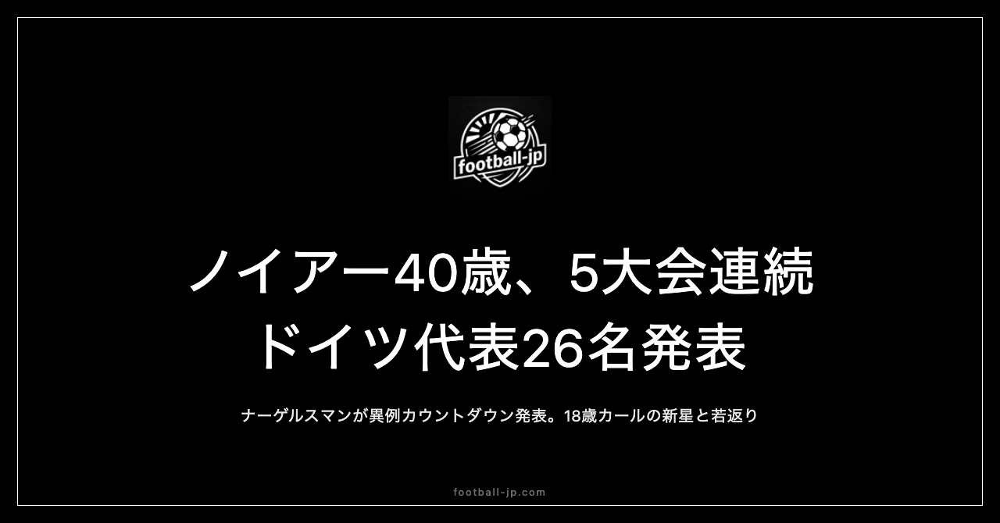

ノイアー40歳5大会連続、ドイツ代表26名発表｜異例カウントダウン発表に18歳新星カール
現地時間2026年5月21日、ナーゲルスマン監督名義でW杯2026ドイツ代表26名が発表された。引退を表明していた40歳のマヌエル・ノイアーの電撃復帰と、バイエルン・ミュンヘン出身18歳のレナート・カールの抜擢が最大の話題になった。DFBが採用した「カウントダウン形式」の発表演出も含め、特別な文脈を持つ26名を読み解く。

リーグ別分布：ブンデス15名という国内主軸構成
26名の所属クラブ別リーグ分布は以下の通りだ。
| リーグ | 人数 |
|---|---|
| 🇩🇪 ドイツ（ブンデスリーガ） | 15名 |
| 🏴 イングランド（プレミアリーグ） | 4名 |
| 🇪🇸 スペイン（ラ・リーガ） | 1名 |
| 🇹🇷 トルコ（スュペル・リグ） | 2名 |
| その他 | 4名 |
ブンデスリーガ勢が全体の半数以上を占める国内色の強い構成だ。バイエルン・ミュンヘンからはノイアー・ゴレツカ・ムシアラ・パヴロヴィッチ・レナート・カールの5名、ボルシア・ドルトムントからはアントン・バイアー・シュロッターベックの3名が選出されている。プレミアリーグ組の4名にはハフェルツ（アーセナル）・ヴィルツ（リヴァプール）・チャウ（ニューカッスル）・ウォルトメイド（ニューカッスル）が含まれる。
GK 3人：電撃復帰のノイアーと次世代候補
GKの主軸はマヌエル・ノイアー（バイエルン・ミュンヘン🇩🇪）。40歳、EURO2024以来の代表復帰となる。2024年に代表引退を表明していたが、今回電撃的に撤回された。ナーゲルスマン監督がノイアーをこのタイミングで呼び戻した判断には、GK層の薄さという現実的な事情と、世界最高レベルのゴールキーパーとしてノイアーの経験と存在感に対する絶対的な信頼の両面がある。2番手のオリヴァー・バウマン（ホッフェンハイム🇩🇪）は36歳のベテラン、3番手のアレクサンダー・ニューベル（シュトゥットガルト🇩🇪）は29歳の次世代候補だ。
DF 8人：キミッヒ主将とリュディガーのバックライン
右サイドバック兼ボランチとして機能するヨシュア・キミッヒ（バイエルン・ミュンヘン🇩🇪）は31歳の主将。守備の組織力・ゲームのテンポコントロール・ロングパスの精度と、多くの局面でチームの起点になれる万能選手だ。
CBの要はアントニオ・リュディガー（レアル・マドリード🇪🇸）。33歳、レアル・マドリードで長年タイトルを争ってきたCBで、対人守備の強度と空中戦の制空力は欧州最高水準にある。ニコ・シュロッターベック（ボルシア・ドルトムント🇩🇪）は26歳のCBで、足元の技術とビルドアップへの参加が持ち味だ。
MF：ヴィルツとムシアラを軸とした中盤
中盤の核はフロリアン・ヴィルツ（リヴァプール🏴）とジャマル・ムシアラ（バイエルン・ミュンヘン🇩🇪）の二枚。ともに23歳、同い年の二人がドイツ代表の中盤を形成するとき、その組み合わせは世界的にも屈指の創造性を持つ。ヴィルツは2025年夏にレーヴァークーゼンからリヴァプールへ移籍。ムシアラは今シーズン前半を骨折で棒に振ったが、代表復帰を果たした。
パスカル・グロス（ブライトン🏴）は35歳のベテランボランチで、プレミアリーグでの長年の経験とゲームを落ち着かせるテンポコントロールの質はドイツ代表の中盤に安定感をもたらす。
FW：ハフェルツを中心にサネ・ウンダヴ
前線の顔はカイ・ハフェルツ（アーセナル🏴）。27歳、アーセナルでプレミアリーグの頂点を争ってきたFWで、高さ・技術・運動量を兼ね備えた万能性がナーゲルスマンの戦術のなかで中心的な役割を担う。レロイ・サネ（ガラタサライ🇹🇷）は30歳でスピードと突破力は健在。デニズ・ウンダヴ（シュトゥットガルト🇩🇪）はスピードを活かした裏への抜け出しと決定力が持ち味だ。
40歳ノイアーの5大会連続という記録
2010年6月、南アフリカのヨハネスブルクでドイツ代表がオーストラリアと対戦したとき、マヌエル・ノイアーは23歳のGKとして初めてW杯のピッチに立った。あれから16年が経つ。
- 2010年南アフリカ大会——23歳のノイアーは6試合で4度の完封を記録してドイツの3位入賞に貢献
- 2014年ブラジル大会——決勝までの7試合でわずか4失点。大会最優秀GKに選ばれ、ドイツの優勝に貢献
- 2018年ロシア大会——ドイツはグループステージで早期敗退という衝撃の結果に
- 2022年カタール大会——ドイツ人GK史上初のW杯4大会連続出場を樹立。チームは再びグループステージ敗退
- 2026年北米大会——40歳で5大会連続
ノイアーが最初にW杯のピッチに立った2010年当時、今回のメンバーで最年少のレナート・カールは2歳だった。そのカールと同じリストに名前が並ぶという事実——それがこの26名のなかで最もドラマチックな数字だ。
18歳カール抜擢——ナーゲルスマンの選択
レナート・カール（Renato Karl）は2008年2月22日生まれ、現在18歳。バイエルン・ミュンヘンのアカデミー出身で、2025年夏のFIFAクラブワールドカップでトップチームデビューを果たした攻撃的MFだ。左利きの168cm、狭いスペースを抜け出す動き出しと意表を突くダイレクトプレーの速さが持ち味で、チャンピオンズリーグでクラブ史上最年少得点（17歳242日）の記録も樹立している。
ナーゲルスマンが18歳のカールを選んだ判断は、単なる将来への投資ではない。「今大会で使う」という前提があったと読み取るのが妥当だ。40歳のノイアーと18歳のカールが同じユニフォームを着てW杯のピッチに立つ可能性がある。その22歳差の並立は、この26名を語る上で外せないテーマだ。
グループE：キュラソー・コートジボワール・エクアドル
キュラソー代表は今大会の初出場国で、オランダの自治領である人口約16万人の島国。W杯史上最も人口の少ない参加国・地域の一つとされており、78歳のディック・アドフォカート監督はW杯歴代最年長指揮官となる見込みだ。
コートジボワール代表はアフリカ予選を8勝2分けの無敗・25得点無失点で突破した堅守のチームだ。MFディアロ（マンチェスター・ユナイテッド）をはじめ欧州5大リーグでプレーする選手が多い。
エクアドル代表はW杯南米予選を18試合5失点という堅守で乗り切り、ブラジルを上回る2位で突破した実力国。MFカイセドが中盤の心臓部として君臨する。グループEでの最大の山場はエクアドル戦になる可能性が高い。
2大会連続グループステージ敗退という「事件」を経験したドイツ代表にとって、今大会のグループステージ突破は結果として最低限の条件だ。キミッヒが主将として引っ張り、40歳のノイアーがゴールを守り、ヴィルツとムシアラが中盤で創造性を発揮し、18歳のカールがベンチから仕掛ける——そのすべてが噛み合ったとき、ドイツは決勝トーナメントで改めて存在感を示すはずだ。